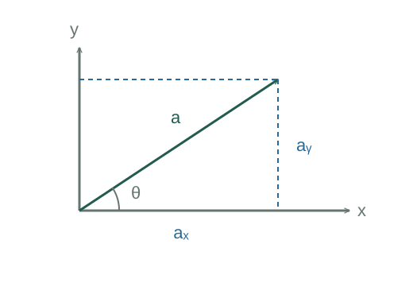

Why vector components use sine and cosine
Resolving a vector means finding its projections on independent axes. The components are signed numbers; the vector itself is their sum multiplied by unit directions.
What the symbols mean
a ≥ 0: magnitude; θ: angle measured from positive x toward positive y; î, ĵ: orthogonal unit vectors.
When this applies
The displayed trigonometric formulas use orthonormal Cartesian axes and the stated angle convention.
Developing the argument

Construct a right triangle
Draw the vector as the hypotenuse and drop a perpendicular to the x axis. The adjacent side divided by the hypotenuse is cos θ; the opposite side divided by it is sin θ.
Retain the signs
The trigonometric definitions continue into all quadrants. For example, a vector pointing left and upward has a negative x component and a positive y component.
Rebuild the magnitude
Orthogonality makes the cross term vanish when the vector is dotted with itself. Pythagoras then gives the length.
A closer lookWhy does the dot product measure a projection? ↗Add vectors component by component
Collect the coefficients of the same independent unit directions. Magnitudes generally cannot be added directly because direction matters.
A worked example
A 10 N vector at 150° has components −8.66 N and +5.00 N. Squaring and adding gives its original magnitude of 10 N.
Derivation behind this calculation ↗A point to keep straight
Use atan2(aᵧ, aₓ) to recover direction. A plain inverse tangent of aᵧ/aₓ loses the quadrant.
Check the assumptions and derivation ↗